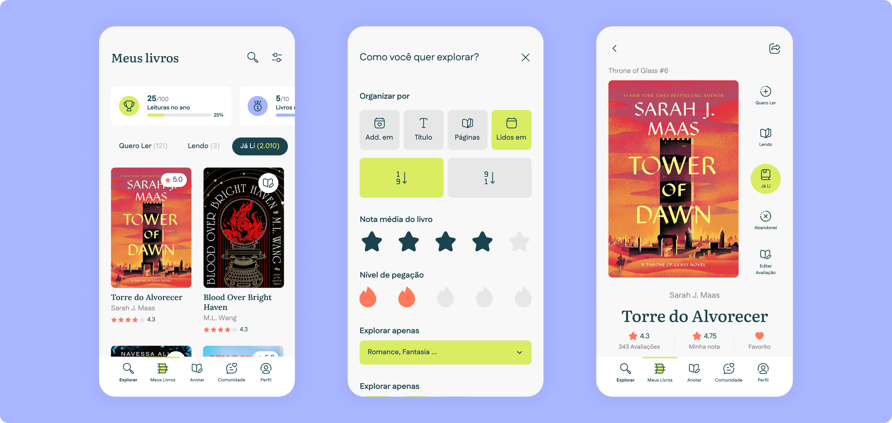
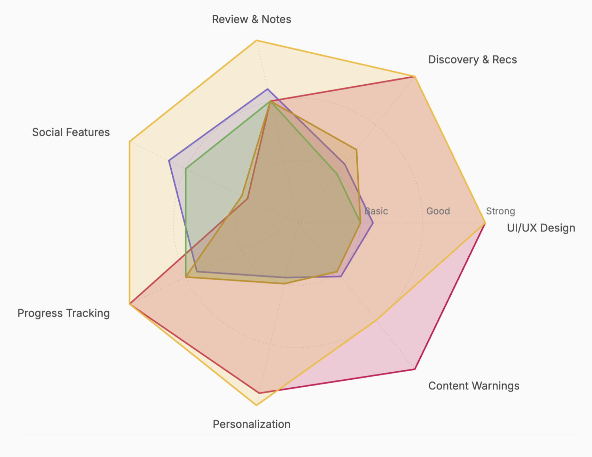
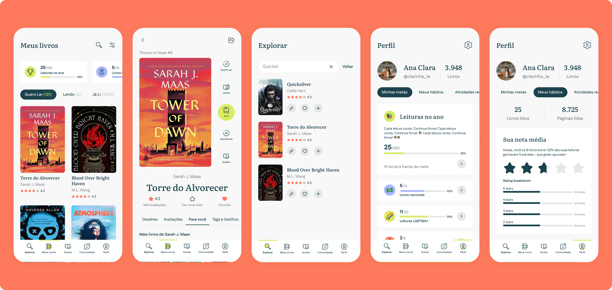
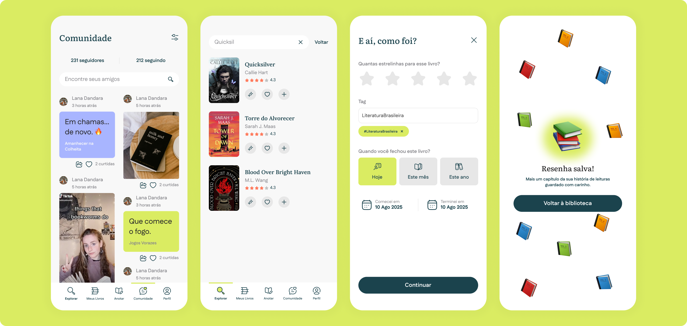

Miolo
Book Tracking App · UX/UI Design · Mobile

Book Tracking App · UX/UI Design · Mobile

Book lovers in Brazil have nowhere that truly feels like theirs. Goodreads is cluttered and Amazon-driven. Skoob is functional but buggy. StoryGraph is clean but cold. People were stitching together their reading lives across TikTok, Notion, and Instagram just to track books and find their next read.
I co-designed this project with Lana Dandara across the full process — from survey design and research synthesis through competitor analysis, persona definition, and a fully interactive Figma prototype.
01 — Research
We ran a survey shared across TikTok and social media. The data revealed this wasn't a feature problem: it was an emotional one. The highest-intensity pain points were about forgetting: forgetting what a book made them feel, losing that connection over time.
User Research · 26 respondents
Pain points & intensity
Survey distributed via TikTok and social media. Pain points ranked by frequency and emotional weight.
Source: Miolo reader survey · 26 respondents · distributed via TikTok & social media · 2024
02 — Personas
We mapped three personas — Casual, Habitual, and Avid Reader — and designed primarily for Luisa, 25–35, who reads 1–2 books a month and wants tools that feel personal rather than clinical.
03 — Benchmark
We analysed Goodreads, StoryGraph, Skoob, LibraryThing, and Fable. The opportunity was clear: no one was doing private-first journaling, warm UX, and emotionally intelligent recommendations at the same time.
Feature strength comparison
Rated across Review & Notes, Discovery & Recs, UI/UX Design, Content Warnings, Personalization, Progress Tracking, and Social Features.

Products
04 — Design & prototype
Five main sections: Shelf, Journal, Discover, Insights, and Profile. The AI layer surfaces recommendations by mood and trope — not genre alone. Warm coral and cream palette, Nunito for UI, Crimson Text for journal entries.

Key decision 01
Every competitor defaults to public. We flipped that — your journal is yours, and sharing is always a conscious opt-in.
Key decision 02
Genre filters are too blunt. Users can ask for "a sweet but sad road trip romance with a dog" and actually get something that fits.

“I want to remember what I thought about each book, not just that I read it.”
A fully interactive prototype covering all five app sections, a complete design system, and a brand identity built for the Brazilian market. The product is currently in the investment phase.
Tools: Figma · FigJam · Google Forms